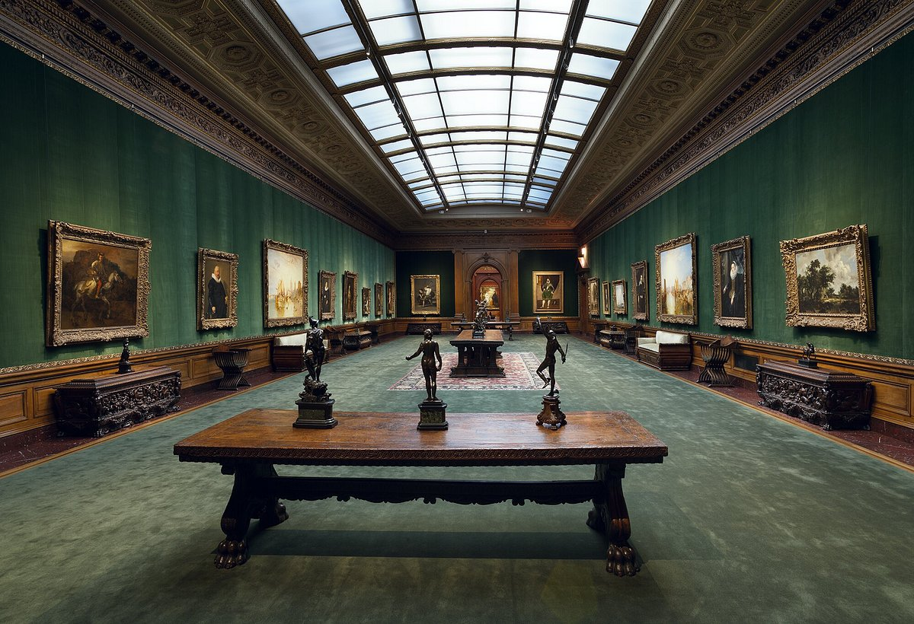
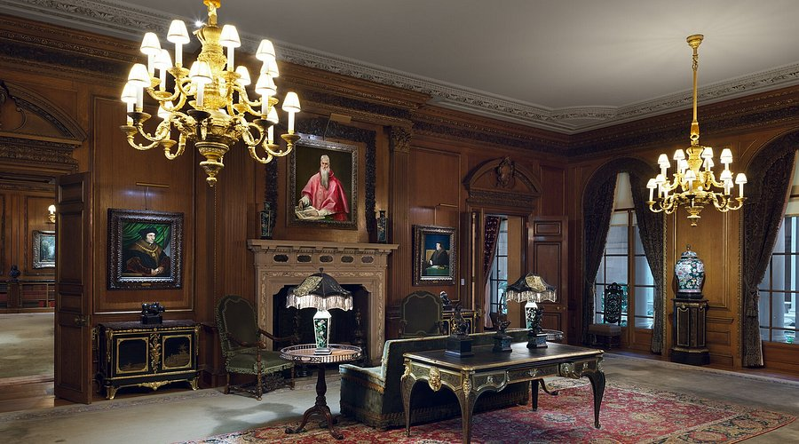
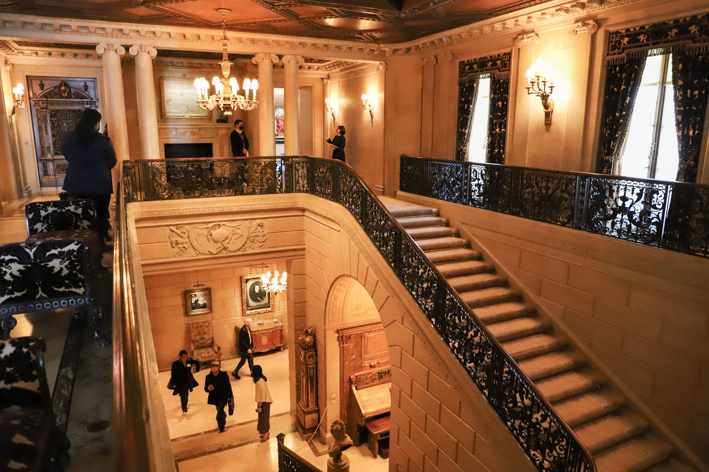

A vibrant museum in Prospect Park showcasing global art, bold contemporary exhibitions, and Brooklyn’s creative spirit.
The Frick Collection is an intimate yet world-class art museum housed inside the former mansion of industrialist Henry Clay Frick on Fifth Avenue. Unlike the sprawling halls of larger institutions, the Frick preserves the feeling of a private home where masterpieces were meant to be lived with, not just looked at. Its rooms display a remarkable collection of European paintings, sculptures, decorative arts, and finely crafted furniture arranged much as Frick himself placed them. Visitors move through paneled libraries, marble halls, and sunlit courtyards, encountering works by Vermeer, Rembrandt, Goya, Turner, and other giants of Western art. The museum feels like a window into the tastes and lifestyle of a powerful Gilded Age collector, offering an atmosphere of elegance and quiet luxury.
The history of The Frick Collection begins with Henry Clay Frick, who built his mansion in 1913–1914 with the express intention that it would one day become a public museum. A steel and railroad magnate, Frick amassed an extraordinary collection during his lifetime, focusing on Old Master paintings and fine European decorative arts. After his death in 1919, his will ensured that the home and its contents would be opened to the public, and in 1935 the museum officially welcomed visitors. Over the years, the institution expanded with additional galleries and the renowned Frick Art Reference Library, becoming a major center for research and art scholarship. Despite these changes, the museum has remained true to Frick’s vision, preserving the intimate domestic atmosphere that makes it feel more like a grand European residence than a traditional museum.
The appeal of The Frick Collection lies in its elegance, serenity, and unique setting. Many museums overwhelm visitors with scale, but the Frick invites you to slow down and take in the art at a more human pace. Each room is thoughtfully arranged, blending masterpieces with tapestries, porcelain, and period furniture to create harmonious, lived-in spaces. Natural light, marble fireplaces, and garden views add to the sense of refinement, making the experience feel personal and almost cinematic. For visitors who want to appreciate art without crowds or sensory overload, the Frick offers a peaceful escape where beauty feels both accessible and immersive.

Someone should visit The Frick Collection because it provides a rare opportunity to see iconic works of European art in the kind of environment they were originally meant to inhabit. Rather than sterile white walls, the paintings hang in richly furnished rooms that enhance their presence and meaning. The museum also offers a welcome pause from the city’s pace—quiet, contemplative, and filled with old-world charm. Whether you’re drawn by the art, the architecture, the history, or simply the chance to experience something refined and atmospheric, the Frick delivers an unforgettable visit that lingers long after you leave.
The Frick Collection is significant to New York City because it preserves an essential part of the city’s Gilded Age history while enriching its cultural landscape with one of the finest art collections in the country. As a cornerstone of Museum Mile, it offers a counterpoint to the scale and modernity of nearby institutions, reminding visitors of the tradition of private collecting that helped shape New York into a global arts capital. The museum also contributes to scholarship through its world-renowned library, supporting research that reaches far beyond the city. By blending historical preservation, cultural education, and artistic excellence, the Frick remains a vital and beloved part of New York’s identity.
